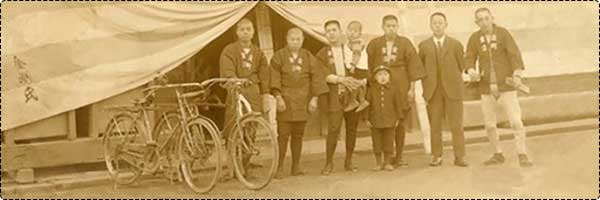
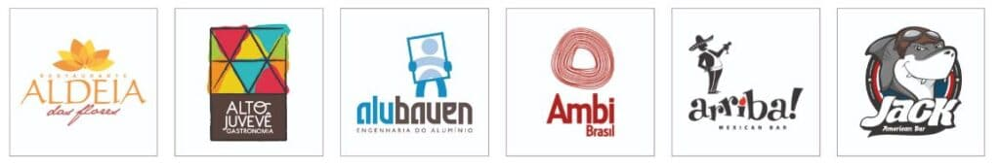

Existem algumas marcas ao redor do mundo com mais de 1000 anos de existência e marcas fazem parte da história da humanidade há mais de 3500 anos.
A japonesa Kongō Gumi é uma construtora que nasceu no ano 578 e embora tenha sido adquirida, por outra empresa em 2006, continua em atividade. Hotéis, restaurantes, vinícolas e outras atividades carregam marcas com séculos de existência, tal como a da imagem que colocamos na página inicial e que trouxe você até aqui: um detalhe de um sino da fábrica Pontificia Fonderia Marinelli, a mais antiga empresa familiar da Itália.

Logotipos bem construídos, livre de modismos, são o início de uma marca duradoura. Gosto de pensar no logotipo como uma vitrine aonde serão colocados os valores da marca, sua história e conceitos. Ele tem que ter significado para o proprietário e criar conexões, confiança e admiração para o seu público.
Muito antes das marcas terem o glamour que adquiriram a partir do século XX, elas eram a forma de identificar a posse de uma propriedade, bem como a forma que um artesão possuía para dar garantia no seu produto e diferenciar sua qualidade superior. Dos carimbos cilíndricos dos mesopotâmios (3500 A.C.) surgiram as primeiras “marcas registradas”, pois sua gravação comprovava a autenticidade de documentos e peças. Vieram então as heráldicas, representando guerras e glórias em brasões que alcançaram todos os reinos da Idade Média. Uma evolução constante e lenta foi estruturando a ideia de marca na sociedade.
Na metade do século XIX, com o aperfeiçoamento das manufaturas e da comunicação impressa, iniciaram-se os processos de uso de marcas em larga escala. Coca-Cola é um desses ícones de várias gerações. A marca, então, passa a ser a forma como as empresas diferenciam produtos com características muito parecidas. Logo, lembramos da dualidade Pepsi e Coca-Cola ao longo dos últimos 150 anos. Por outro de lado, para o consumidor, as marcas e seus logotipos são a melhor forma de identificação de suas preferências diante de um universo de produtos com diferenças sutis. Para a marca, a lembrança será sempre a responsável pela manutenção das qualidades que criaram essa confiança.
A minha história com o design começou na infância, em meio ao cheiro de tinta e das pilhas de papéis, na gráfica dos meus pais. Olhar para a forma mágica de como a tinta era transferida para o papel, através de finas folhas de alumínio gravadas em salas escuras, a uma velocidade impossível de contar me fazia sonhar. Não havia computadores, tudo era feito de uma maneira artesanal, com direito a estiletes, cola e muitas tiras de papel. Nos anos 90, com a chegada dos softwares de edição gráfica um universo novo se abriu. Eu cursava Direito na PUC-PR, e logo já estava fazendo o jornal do centro acadêmico. Um amigo, o Cláudio Amaral, me pediu para fazer um logo para a agência de turismo da sua família, a Crystal Turismo. Pouco tempo depois comprei o livro Marcas Fortes, do Miran, o qual acendeu minha paixão pela criação de marcas dentro desse conceito. Ver ali reunidas, tantas marcas representadas apenas em preto e branco, selecionadas por um grande nome do design da década de 80, me fez querer mais. Que ainda venham muitas e muitas criações.
Alex DallAgnol
Clique e aqui e conheça nossa história em logotipos.
